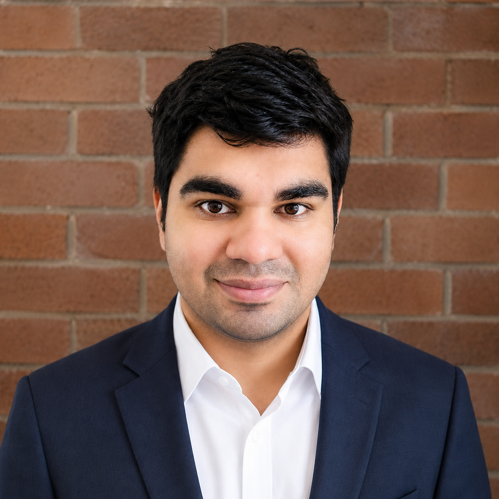

Chief Applied Scientist · Capsule AI
BTech (Electronics), MS (Electrical & Computer Engineering) MPS (Medical Oncology), MDip (Counseling Psychology) Fellowship in Clinical Oncology (AHERF), CPD-UK accredited Currently: PGD in Computer Science & Engineering, IIT Bombay
1Chief Applied Scientist, Capsule AI 2formerly Research Scientist II, Amazon

I work where mathematics, AI engineering, and oncology meet. At Capsule AI I lead applied science for agentic systems that read trials, literature, scans, and records, so that clinical and research teams can act on what they contain. Before this I spent two years as an independent AI consultant to companies in medical AI, information retrieval, and ed-tech, and nearly five years at Amazon on causal inference and ad measurement. My degrees are in electrical engineering, with postgraduate study in medical oncology.
Medicine produces more evidence than any team can read. Trials, literature, imaging, and records hold answers, but in forms that resist use1. My work is building systems that read that evidence and turn it into decisions a clinical or research team can defend.
Hover a term of equation (1).
Equation (1) is a compact statement of the job, and each term draws on a different discipline. The expectation and the do-operator come from mathematics. Reading and checking the evidence 𝓔 at scale is an engineering problem, and it needs evaluation and guardrails before anyone should rely on it. The utility U only means something with clinical judgment behind it2.
My work falls into four areas. Each needs mathematics, AI engineering, and oncology at once; what changes is which one leads3.
Models of how a tumour’s sensitive and resistant cells compete, used to design dosing schedules. Agents propose schedules, simulation tests each one, and the best are checked on virtual patients they have never seen.
Agents read trials, papers, and patient records, and extract each result with its uncertainty. Statistics pools them into one estimate, adjusted where the data are observational, that a clinical team can act on.
Measuring how often agents are wrong, calibrating how sure they are, and deciding when a case should go to a clinician instead. The clinician sets the acceptable error; the mathematics finds where to draw the line.
Separating what a treatment does from who happened to receive it. A comparison that looks harmful overall can reverse once the confounder is accounted for. Practised at scale at Amazon; applied now to clinical data.
Figure 2 lays my training and appointments out on a single time axis, one row per discipline. The rows ran in parallel more often than in sequence.
| Period | Role | Focus |
|---|---|---|
| 2026– | Chief Applied Scientist 1Capsule AI | Agentic-pipeline architecture, harness engineering, and evaluation for AI over life-sciences data. |
| 2024–26 | Principal AI ConsultantIndependent | Guiding and building for companies in four areas:
|
| 2022–24 | Research Scientist II 2Amazon · Ad Measurement and Optimization | Causal model calibration, statistical noise reduction, and portfolio planning for advertising. |
| 2019–22 | Data Scientist I & IIAmazon · Ad Measurement and Optimization | Causal inference and recommender systems for advertising measurement. |
| 2018 | Visiting ResearcherUC Berkeley | Adversarial-ML defense with Prof. Dawn Song, on certified robustness for deep networks. |
Bars show citations to date. Full list on Google Scholar →
| Year | Qualification | Institution |
|---|---|---|
| 2025– | PG Diploma in progressComputer Science & Engineering | IIT Bombay |
| 2024–25 | FellowshipClinical Oncology · CPD-UK accredited | Apollo Hospitals Educational and Research Foundation (AHERF) |
| 2024 | MDipCounseling Psychology | IISDT |
| 2023–25 | MPSMedical Oncology | Tech Global University |
| 2019–21 | Professional CertificateArtificial Intelligence | Stanford University |
| 2017–19 | MSElectrical & Computer Engineering | Georgia TechGPA 4.0/4.0 |
| 2013–17 | BTechElectronics Engineering | VJTI, MumbaiGold Medal, Department Rank 1 |
Correspondence
Open to advisory, board, and leadership conversations.